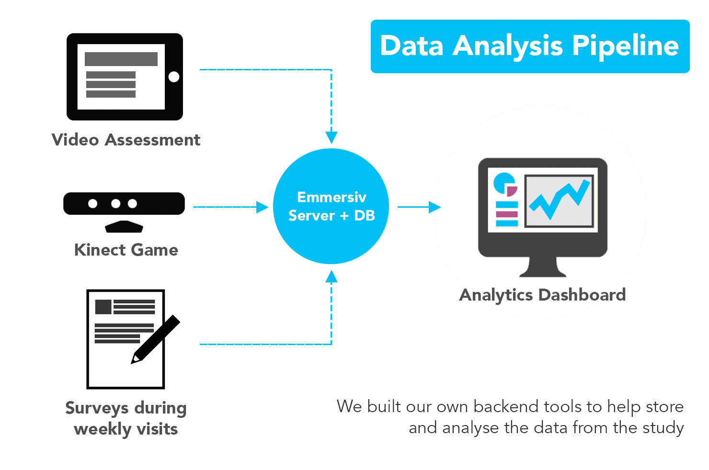

The prevalence of Autism is rising. 1 in 50 kids is now diagnosed with a form of ASD (Autism Spectrum Disorder).
The primary mode of treatment for children with Autism is behavioral therapy which is delivered in a face-to-face
setting by a certifed behavioral analyst. Often, these therapy sessions cost a lot and most clinics don't have the
bandwidth to provide the required hours of treatment to kids affected by Autism.
I led the design of a solution, together with my team at the West Health Institute, to research new and engaging methods of delivering
behavioral therapy to children on the spectrum. Over the course of my research, we built numerous prototypes and
even a ran a small clinical study to see if kids with Autism can learn from digital tools.
The Emmersiv system uses the Microsoft Kinect and offers a host of mini-games that kids can play as a reward for
doing their therapy. The system delivers social skills therapy with emphasis on the following areas
Our design process had four major phases. With each phase, we made changes to our approach (clinically or technologically) and gradually shifted towards the current direction.
When the project began, I knew little about Autism or the challenges kids with this disorder faced. In a bid to educate
myself about my target audience, we conducted "fly on the wall" studies to observe kids from across the spectrum interact
with off the shelf Kinect games. We soon learned that the range of abilities across the spectrum varied immensely.
Kids with low to moderate severity had shorter attention spans and less than ideal motor skills. These kids struggled
to use the Kinect. On the other hand, kids with higher functioning autism had abilities analogous to their neurotypical
peers. They were able to pick up the gestural interaction metaphor within a few exposures to the Kinect system.
Armed with the findings from our observational research, we began ideation. We came up with various interaction metaphors around choice making behavior, feedback, prompting and reorienting kids back in view of the Kinect, if they stepped away from the playing area. Each metaphor was tested with kids and rated against recognition and ease of use. With the basic research around interaction completed, we proceeded to design the remainder of the prototype. This version utilized simple 2D games and cartoons as motivators for kids to endure their therapy (discrete trial based approach to teach basic language skills).
Here's what I learnt from the previous stage of prototyping:
The key takeaways from the research phase were:
Since we were working with a variety of ages and abilities (even within the smaller subgroup of school aged children with
higher functioning autism), there were several challenges in building interaction metaphors that were easy for the kids
to pick up and uniquely detectable by the Kinect sensor.
One of the biggest drawbacks of using a sensor such as the Kinect is that smaller bodies produce noisy skeleton data.
During some of our earlier tests, we realized that the elbow joint was often confused for the shoulder when the child
stuck his/her arm forward such that the hand occluded the shoulder. Issues like this forced us to design a gestural
vocabulary that was based on more coarse movements such as leaning left/right (spinal column), raising both arms up and
movement of the arm as a whole to point at different objects. We prototyped and tested at least six different interaction metaphors before settling on the gestures shown in this
video.
While it may not seem intuitive, the home is a very dynamic environment. This is true even more so, for families with kids on the
Autism spectrum. During our initial tests, we realized that siblings, pets, furniture and even the variation in ambient
lighting could potentially act as additional sources of noise for the Kinect. Furniture could be falsely recognized as
a user and as much as we would try, siblings would often find it hard to resist the appeal of the game itself. For these
reasons, we implemented a player lock mechanism.
While locking down all recognition of gestures to a single player wasn't very challenging, we had to find a subtle way to
insert this mechanism into the app. At the beginning of the game, the player would open the door of the arcade to enter it.
We tied this action to a hand raise gesture and locked onto the skeleton that performed this.
This turned out to be extremely simple. Most user's complied with this protocol unknowingly as it happened early enough in
the lifetime of the application.
During the course of the build, the team came up with numerous ideas for engaging mini games that would serve as motivators for kids to do their therapy. While this was a key component of our design, we didn't want to re-invent the wheel and borrowed mechanics from existing games which were big hits with kids. Here are snapshots of the games we created. Besides fun games, we also created 6 core characters, each with their own personalities. This cast of characters featured in over 20 vignettes which were used to teach the kids about social skills.
Once the application was completed, we deployed the prototype in nine homes as part of a single subject study for
Rady Children's Hospital. The application was deployed on the Alienware Alpha gaming console. The study ran for
six months. Here are the key features of the study design:
The app would track the user's performance. There were numerous streams of data. The most obvious ones were around gameplay, their overall usage and their responses to the various questions posed after watching a social vignette. Besides data about how they used the app, we also took snapshots using the Kinect camera every time the game began. This proved useful later on when we wanted to establish if the child was in fact the participant and not his/her sibling.
The study is currently being concluded and published. To summarize, here's what we learnt from the study: